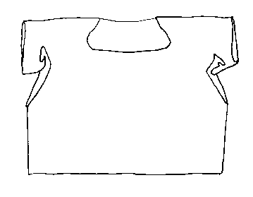
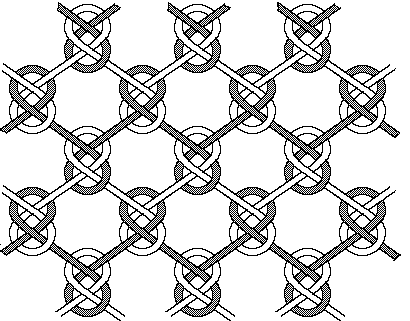

This particular item is a relic belonging to San Marco monastary in Rome, although it can also be found in the small chapel in the room at Piazza Farnese in Rome where St. Birgitta died.
This shirt is made from a thick brown-black yard made from horse tails and cows tails. It is netted with large loops, possibly made with a needle. The edges are wrapped in cloth, although this may be a later addition.
The shirt is 106 cm (42") wide at the hem (for a bottom circumference of 212 cm (83"). The whole thing is 46 cm (") from shoulder to bottom edge. Under the arms are long, deep slits, probably to facilitate movement. The short sleeves were added on later. The neck hole is squarish.

Reconstruction of the netting pattern for the hairshirt. After Andersson and Franz�n
Return to Contents
Some Clothing of the Middle Ages - Other Garments - St. Birgitta's Hairshirt, by I.
Marc Carlson, Copyright 1998, 1999
This code is given for the free exchange of information, provided the Author's Name is
included in all future revisions, and no money change hands-
{kind=link}